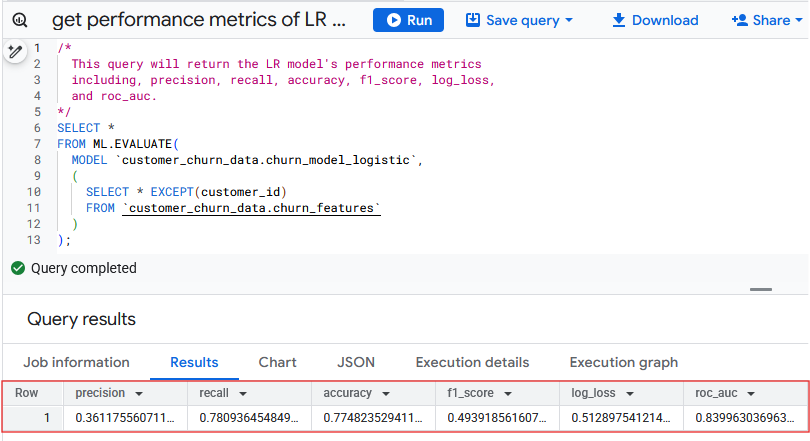
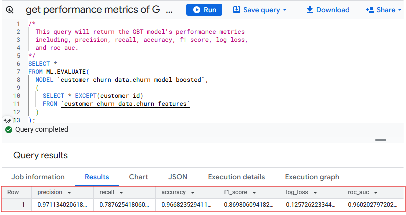
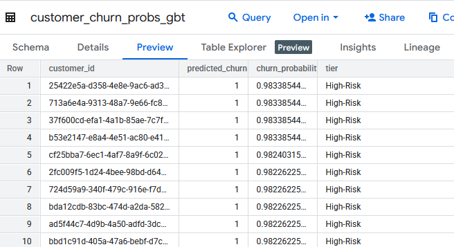
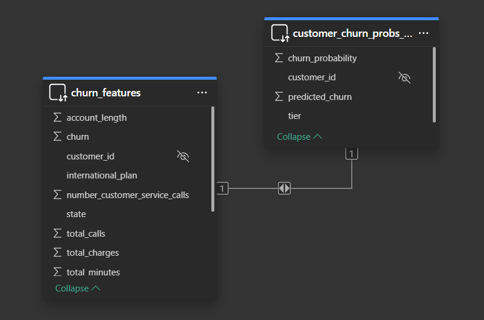
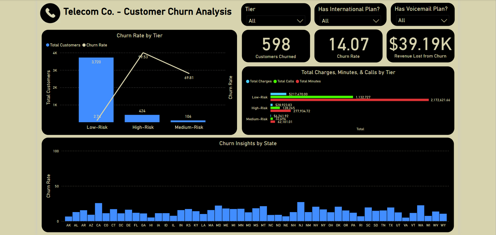

Telecom Co., a US-based telecommunications company that offers national and international phone services, is experiencing a high volume of customers canceling their phone service, which is costing the company thousands of dollars in losses.
Identify Business Goal: To solve this, I'm proposing a proactive solution to predict at-risk customers using Logistic Regression and Gradient Boosted Tree machine learning models and take action to prevent them from churning.
The dataset will be scraped from an online source, Kaggle, and cleaned using a Python script.
In this script:
Kaggle's API and pandas are used to authenticate the connection, extract the .csv file from the repository, and read it into a pandas DataFrame.
It is then transformed back into a .csv file for the blob used to write to the GCS bucket.
An instance of GCP's Storage client is initialized to gain access to the GCS bucket and upload the data.
Once uploaded, an external BigQuery table is created by retrieving the dataset from the GCS bucket.
This table serves as a reference to create/update the final churn-features table, which is used to train the ML models and analyze in Power BI. In BigQuery, scheduled queries train the models and store results in native tables. Only the predictions from the most accurate model are analyzed in Power BI.
Use Kaggle API and pandas to read in the dataset, and SQL to transform values, normalize features, and engineer churn indicators (total_minutes, total_charges, total_calls, vm_plan, int_plan, tier).
The function below, get_data, uses Kaggle's API and pandas to extract and load the data into GCP.
def get_data():
# Authenticate with Kaggle API
kaggle.api.authenticate()
# Download the dataset
kaggle.api.dataset_download_files(dataset, path='.', unzip=True)
# Download the dataset metadata
kaggle.api.dataset_metadata(dataset, path='.')
# Read in .csv file into dataframe
df = pd.read_csv(local_path)
# Set values for GCS bucket and blob name
blob_name = file_name
df.to_csv(blob_name, index=False)
# Initialize Storage client to access GCP storage bucket
client = storage.Client(credentials=credentials, project=project_id)
bucket = client.bucket(bucket_name)
blob = bucket.blob(blob_name)
blob.upload_from_filename(local_path)
Data Cleaning & Transformations:
Columns, international_plan, voice_mail_plan, and churn are cast from boolean to INT64 for the ML model.
The function below, get_query_string, does 90% of the transformation work.
def get_query_string(ext_table_id, ext_table):
# Define the SQL query string
return f"""
WITH getTotals AS (
SELECT
customer_id,
TRUNC(SAFE_CAST(SUM(total_day_minutes + total_eve_minutes + total_intl_minutes + total_night_minutes) AS FLOAT64), 2) AS total_minutes,
SAFE_CAST(SUM(total_day_calls + total_eve_calls + total_intl_calls + total_night_calls) AS INT64) AS total_calls,
TRUNC(SAFE_CAST(SUM(total_day_charge + total_eve_charge + total_intl_charge + total_night_charge) AS FLOAT64), 2) AS total_charges
FROM `{ext_table_id}`
GROUP BY customer_id
)
SELECT
TRIM(LOWER(final.customer_id)) AS customer_id,
state,
SAFE_CAST(account_length AS INT64) AS account_length,
CASE WHEN international_plan = FALSE THEN 'No' ELSE 'Yes' END AS international_plan,
CASE WHEN voice_mail_plan = FALSE THEN 'No' ELSE 'Yes' END AS voice_mail_plan,
gt.total_minutes,
gt.total_calls,
gt.total_charges,
SAFE_CAST(number_customer_service_calls AS INT64) AS number_customer_service_calls,
SAFE_CAST(churn AS INT64) AS churn
FROM `{ext_table}` final
LEFT JOIN getTotals gt
ON final.customer_id = gt.customer_id
"""
The getTotals CTE aggregates totals using SAFE_CAST and TRUNC to ensure precision.
Trailing white spaces in customer_id are removed.
international_plan and voice_mail_plan are transformed to 'Yes' or 'No' for better readability in dashboard slicers.
The final table, churn_features is created using the SQL string and BigQuery's query function.
# Get query string to clean and transform the final table
query = get_query_string(external_table_id, external_table)
client.query(f"CREATE OR REPLACE TABLE `{project_id}.{final_table}` AS {query}").result()
Remaining transformations are handled in scheduled BigQuery queries and can be referenced below.
Get the churn predictions using Logistic Regression
/*
This query will get the customers' predicted churn probability
using the Logistic Regression model.
Note: Accessed customers' churn probability by indexing
the predicted_churn_probs array and getting the property,
prob, from the struct
*/
CREATE OR REPLACE TABLE `customer_churn_data.customer_churn_probs_lr` AS
SELECT
customer_id,
predicted_churn,
predicted_churn_probs[0].prob AS churn_probability,
CASE
WHEN predicted_churn_probs[0].prob < .40 THEN "Low-Risk"
WHEN predicted_churn_probs[0].prob >= .40 AND predicted_churn_probs[0].prob < .70 THEN "Medium-Risk" ELSE "High-Risk"
END AS tier
FROM ML.PREDICT(
MODEL `customer_churn_data.churn_model_logistic`,
(
SELECT *
FROM `customer_churn_data.churn_features`
)
)
ORDER BY churn_probability DESC;
Get the churn predictions using Gradient Boosted Trees
/*
This query will get customers' predicted churn probability
using the Gradient Boosted Tree model.
Note: Accessed customers' churn probability by indexing
the predicted_churn_probs array and getting the property,
prob, from the struct
*/
CREATE OR REPLACE TABLE `customer_churn_data.customer_churn_probs_gbt` AS
SELECT
customer_id,
predicted_churn,
predicted_churn_probs[0].prob AS churn_probability,
CASE
WHEN predicted_churn_probs[0].prob < .40 THEN "Low-Risk"
WHEN predicted_churn_probs[0].prob >= .40 AND predicted_churn_probs[0].prob < .70 THEN "Medium-Risk" ELSE "High-Risk"
END AS tier
FROM ML.PREDICT(
MODEL `customer_churn_data.churn_model_boosted`,
(
SELECT *
FROM `customer_churn_data.churn_features`
)
)
ORDER BY churn_probability DESC;
Modeling:
Logistic Regression was chosen for its simplicity and scalability but only achieved 77.48% accuracy.
Gradient Boosted Trees achieved 96.68% accuracy and was chosen as the final model.
The performance results are below.
 
Customers are segmented into risk tiers based on churn probability:
Low-Risk: 0 - 0.40 (non-inclusive)
Medium-Risk: 0.40 - 0.70 (non-inclusive)
High-Risk: 0.70 - 1.00 (non-inclusive)
Power BI connects to BigQuery using Direct Query for real-time analysis.
Explore data distributions, correlations, and trends using visualizations to identify key churn drivers.
A star-schema data model was used since it was manageable for this dataset and to ensure filters apply correctly across visuals.
Insights are organized by sections below.
Service Usage by Risk Tier
| Risk Tier | Total Charges | Total Calls | Total Minutes |
|---|---|---|---|
| Low-Risk | $217,470.00 | 1,132,727 | 2,172,621.66 |
| High-Risk | $28,923.83 | 128,265 | 277,934.72 |
| Medium-Risk | $6,261.92 | 32,494 | 62,101.01 |
Churn Insights by Plan Type and Risk Tier
Overall Insights:
Total customers churned: 598
Overall churn rate: 14.07%
Revenue lost from churn: $39.19k
Churn by Risk Tier:
Low-Risk: 3,720 customers; 2.74% churn rate
Medium-Risk: 106 customers; 69.81% churn rate
High-Risk: 424 customers; 99.53% churn rate
State Insights:
New Jersey had the highest churn rate at 27.08%
Segment Insights:
No International or Voicemail Plan
Churned: 383, Churn rate: 13.46%, Revenue loss: $26.11K
Churn Rate by Tier: High-Risk - 100%, Medium-Risk - 75%, Low-Risk - 2.26%
State Insights: Montana had the highest churn rate at 25.93%
Only International Plan
Churned: 133, Churn rate: 45.55%, Revenue loss: $8.33K
Churn Rate by Tier: High-Risk - 98.33%, Medium-Risk - 73.08%, Low-Risk - 11.04%
State Insights: Customers in Iowa (IA), Maine (ME), & New Hampshire (NH) all churned (100%)
Only Voicemail Plan
Churned: 48, Churn rate: 4.76%, Revenue loss: $2.67K
Churn Rate by Tier: High-Risk - 100%, Medium-Risk - 100%, Low-Risk - 1.94%
State Insights: California had the highest churn rate at 25%
Both Plans
Churned: 34, Churn rate: 32.69%, Revenue loss: $2.09K
Churn Rate by Tier: High-Risk - 92.86%, Medium-Risk - 54.55%, Low-Risk - 13.24%
State Insights: Customers in Alabama (AL), Kentucky (KY), Massachusetts (MA), Maine (ME), Minnesota (MN), New Mexico (NM), Nevada (NV), Oregon (OR), Tennessee (TN), & Texas (TX) all churned (100%)

No International Plan (regardless of voicemail)
Churned: 431, Churn rate: 11.18%, Revenue loss: $28.77K
Churn Rate by Tier: High-Risk churn - 100%, Medium-Risk - 83.33%, Low-Risk: 2.17%
State Insights: New Jersey (NJ) and California (CA) had the highest churn rate at 22.99% and 22.22%
International Plan (with/without voicemail)
Churned: 167, Churn rate: 42.17%, Revenue loss: $10.41K
Churn Rate by Tier: High-Risk - 97.30%, Medium-Risk - 69%, Low-Risk - 11.71%
State Insights: Maine (ME) and New Hampshire (NH) had the highest churn rate at 100% and 83.33%
No Voicemail Plan (with/without international)
Churned: 516, Churn rate: 16.44%, Revenue loss: $34.43K
Churn Rate by Tier: High-Risk - 99.74%, Medium-Risk - 73.17%, Low-Risk - 2.77%
State Insights: New Jersey (NJ) has the highest churn rate at 27.03%
Voicemail Plan (with/without international)
Churned: 82, Churn rate: 7.37%, Revenue loss: $4.75K
Churn Rate by Tier: High-Risk - 97.56%, Medium-Risk - 58.33%, Low-Risk - 2.67%
State Insights: New Jersey (NJ) has the highest churn rate at 27.27%.
High-Risk customers consistently churn at rates near or at 100%, especially those with international plans.
Voicemail plans are linked to lower churn rates, especially among Low and Medium-Risk groups.
International plans are a strong churn predictor, with over 42% of customers churning.
New Jersey frequently appears with the highest churn rate.
Prioritize Retention for Medium and High-Risk Segments
Focus on targeted outreach: retention offers, proactive support, loyalty rewards.
Enhance International Plan Offerings
Bundle voicemail services or offer discounts for combined plans.
Focus on At-Risk States
Target retention in high-churn states such as New Jersey, Maine, and New Hampshire. Investigate service or perception issues.
Drive Engagement in Low-Usage Segments
Use personalized communication, onboarding support, and usage incentives.
BigQuery's built-in ML models and scheduler are used for automation.
Training queries run every Monday at 9:00 AM EST.
Export queries run at 10:00 AM EST.
Power BI reflects updates post-10:00 AM. Scheduling ends September 1, 2025, due to cloud budget limits.